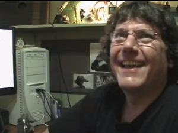
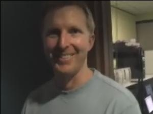
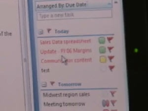

Blogs - Duncanma | Duncan Mackenzie
Blogs - Duncanma | Duncan Mackenzie
MIX09: Time Lapse camera, setup and tear down yay [0:06:33] [2009/03/28] This time lapse video shows how the MIX09 crew sets up and tears down the general session hall from empty room to setup, to rehearsals, to the live event, to tear down.
Modeling Through the Ages [0:03:43] [2008/10/27]Watch a short video that depicts the humble origins of modeling and humorously traces modeling’s evolution from the beginning of history to present day, with Microsoft new modeling platform, “Oslo.”
A quick chat with Microsoft's CIO about the ACE Team [2006/11/23]The Application Consulting & Engineering team (ACE Team) assesses all of Microsoft’s line of business applications for privacy and security vulnerabilities. ACE Team founder and Director Todd Kutz…
The ACE team at Microsoft: Threat Analysis and Modeling [2006/11/23]
The Application Consulting & Engineering team (ACE Team) assesses all of Microsoft’s line of business applications for privacy and security vulnerabilities. Senior Security Technologist Talhah …
Software Security at Microsoft: ACE Team Tour, Part 3 [2006/10/24]The Application Consulting & Engineering team (ACE Team) assesses all of Microsoft’s line of business applications for privacy and security vulnerabilities. This discussion among Ahmad Mahdi (Se…
Software Security at Microsoft: ACE Team Tour, Part 2 [2006/10/24]
The Application Consulting & Engineering team (ACE Team) is chartered to assess all Microsoft line of business applications for security and privacy vulnerabilities. Security Technologist manage…
Software Security at Microsoft: ACE Team Tour, Part 1 [2006/10/24]The Application Consulting & Engineering team (ACE Team) is chartered to assess all Microsoft line of business applications for security and privacy vulnerabilities. ACE Team founder and Direct…
Windows Starter Edition -- One Million Served and still growing [2006/10/11]We recently hit a bit of a milestone,
passing the one million mark of installed copies of Windows Starter Edition, a version of Windows XP (and now Vista) specially designed for use in emerging mark…
VSTO 2005 Second Edition Beta: Thomas Quinn [2006/09/23]Thomas Quinn is the Architect for the Visual Studio 2005 Tools for the 2007 Office System (code name "Cypress"). TQ discusses the engineering decisions behind the design of the tools. He…
VSTO 2005 Second Edition Beta: Martin Sawicki [2006/09/23]Martin is the program manager responsible for this release of the Visual Studio 2005 Tools for the 2007 Office System (code name "Cypress"). In this interview, Martin discusses the scope …
XNA at Microsoft Gamefest [2006/09/12]Ernie Booth headed over to the Microsoft Gamefest 2006 (http://www.microsoftgamefest.com), a conference for game developers held in Seattle, and interviewed Boyd Multerer and David Weller about the …
CodePlex: Shared Source coupled with Agility == Happy Team [2006/08/18]Meet the CodePlex team. They are a very innovative group of passionate people who all work in the same office. Yep. One team. One office. It makes for a very agile and tight knit product team and the …
An interview with Jamie [2006/07/19]
After the release of
Channel 9 Patrol, we just had to get Jamie into a C9 interview of his own. So Duncan flew to Toronto... really...
Active Search in Windows Live Mail Desktop [2006/07/18]It seems we missed some features in our first video on Windows Live Mail Desktop, most notably "Active Search". I headed back to Bryan Starbuck's office to chat with him and Oji Udezue abo…
How Developers can Extend IIS 7 [2006/07/13]Brett (IIS Technical Evangelist), Thomas (IIS Group PM) and James (DPE Group Manager and the guy behind the camera) discuss the many ways you can extend the IIS 7 pipeline, UI, and troubleshooting in …
Visual Studio 2005 Team Edition for Database Professionals [2006/07/07]Cameron Skinner, Gert Drapers, Robert Merriman, Thomas Murphy, and Matt Nunn sat down with me to discuss a new edition to the Visual Studio Team product family: Visual Studio 2005 Team Edition for Dat…
Where is ZAM3D heading to? Electric Rain 3D Demos [2006/06/30]Want to know where ZAM3D is heading to? Check out a very interesting conversation with Mike Soucie who will also show us some conceptual demos that Electric Rain has prepared using ZAM3D and Expressio…
Advanced Modeling. Incorporating 3D into Expression (ZAM3D) [2006/06/30]It is time for some advanced tricks to model 3D objects. In this video you'll learn more advanced features that ZAM3D offers to create great looking 3D models. At the end you will be toured on basic t…
Basic Extrusion, Lathe, Textures, Animation (ZAM3D) [2006/06/29]In this second video Jim Foley continues the amazing presentation by showing us different techniques to work with 3D. Learn how to create basic 3D extrusions and lathes as welll as add textures and b…
Nathan Dunlap talks about WPF from a designer's perspective [2006/06/17]Karsten Januszewski interviews Nathan Dunlap, a design extraordinaire who has been the design lead on numerous WPF applications. His blog, Designers Love .NET (http://www.designerslove.net ), is indi…
Project Glidepath [2006/06/16]Technical Evangelist Michael Lehman has launched a new evangelism program for MicroISVs: Project Glidepath.
Visit http://www.projectglidepath.net and watch as Michael explains the purpose and inner…
Introduction and Basic Object Creation (ZAM3D) [2006/06/15]In this video Mike Soucie and Jim Foley give us an introduction to the use of 3D in interactive applications using Windows Presentation Foundation capabilities. You will learn about the scenarios wher…
The VS 2005 SDK:An Agile Approach [2006/06/13]Charles and Robert interview Phil Taylor about the Visual Studio 2005 SDK and Visual Studio's Extensibility features, covering the team's use of SCRUM and Agile processes along the way.
Anthony Tsim chats about the MSDN Virtual Labs [2006/06/11]Ever want to try out a new development product without having to install it on your machine? Well, the MSDN Virtual Labs will help you do just that. Watch the video, then check out
the labs on Channe…
Chatting about LINQ and ADO.NET Entities [2006/06/10]I met up with Anders Hejlsberg and Sam Druker the other day to get an overview of the May CTP of LINQ and to learn about Entities, a new concept coming in future versions of the ADO.NET stack.
The Future of Visual Studio Tools for Office [2006/06/08]In this video we talk to Visual Studio Tools for Office team General Manager, KD Hallman, and Development Manger, Eric Carter. They’re working on "Cypress", a fully-supported add-on for Vis…
Windows Vista ISV Show-and-Tell [2006/06/08]Windows Vista beta 2 is out the door and third party apps that take advantage of its new platform technologies are starting to appear. In this video Charles and Jason drop in on three ISVs (iBloks,…
Windows Live Mail Desktop beta [2006/06/05]I chatted with Bryan Starbuck and his team about the new mail client that works with Windows Live Mail and all your POP3 and IMAP accounts as well... and RSS... and seems to go way beyond the featur…
Omar Shahine - Windows Live Mail [2006/06/03]Robert chats with Omar and other members of the team about Windows Live Mail, the new redesigned version of the Hotmail web mail system.
Lee Bandy on IPv6 [2006/05/31]Lee Bandy chats with Scoble about IPv6 and the need for transition technologies. Learn why it is possible to write applications today that will work with a network infrastructure that is slowly migrat…
Iain McDonald and Andrew Mason show off the new Windows Server OS [2006/05/25]Ok... this is wicked, Iain and Andrew show me a version of the next Windows Server OS that has essentially no UI, no desktop, no other apps... just pure Server goodness and a command line. Toss the …
Shanen Boettcher shows off Vista Beta 2 [2006/05/25]Shanen, a member of the Vista team from the beginning, takes me through a bunch of features in the Beta 2 release of Vista. We get to see event reporting, new policy management features, some IE secur…
Sharepoint Products and Technologies 2007 -- the server side of Office [2006/05/24]The set of features that make up Sharepoint 2007 are hard to cover with just one video, but 3 group program managers (Jon Kauffman, PJ Hough, and Gerhard Schobbe) and a marketing guy (no offense Law…
Jessica Arnold gives us a look at Outlook 2007 [2006/05/20]Jessica Arnold from the Office team takes Scoble on a quick tour of the new features of Outlook 2007 including the new "To-Do Bar" that integrates your calendar and tasks into one quick ea…
Windows Live Hack Day 2006 [2006/05/03]How do you tryout a bunch of APIs (including Search, Expo, and more) all at once? You have a
Windows Live 'Hack Day', gather developers together into one place, feed them and set them loose trying …